One template, many brands
A single referral portal template, themed for three fictional brands.
Open case study →


The Figma file behind this site, on one canvas: the design system (style elements and components), then Home, About, Selected work, Earlier work and the case studies, on desktop and mobile. Pan and zoom like you would in Figma. I built it with Claude as my sidekick for the repetitive parts. Below the canvas you will find every icon, window, cloud and button.
Images in the mockups are placeholders. The live pages use real screenshots.
Every image, window and button that makes this portfolio feel like a little desktop, laid out in one place. The windows below are live HTML using the site’s own CSS, not screenshots, so what you see here is exactly what ships. I vibe coded all of it with Claude, one window at a time.
Saori is a shiba, and she does two jobs. She is the logo, sitting in the taskbar where a Start button would be, and she is the helper who pops up with a speech bubble when you’ve been still for a while. Same artwork at every size.
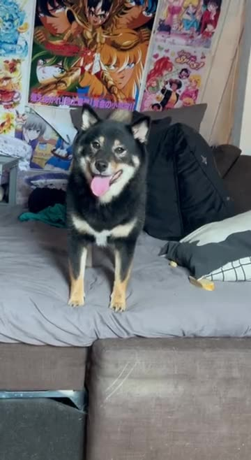
Same CSS as the real helper. Click her for a woof. On the live site she has an idle nudge and a welcome back, and adding ?saori-test to the URL shortens her timers.
The icons on the Home desktop, with the same soft floor shadow and pixel label they have there. Double-click one on the real desktop and its window opens.


None of these landed on the first try. Here are the versions I kept, in order, so you can watch each icon find its place next to the others.
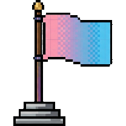
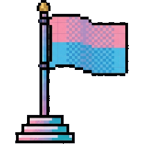
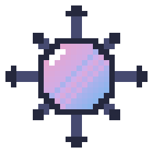
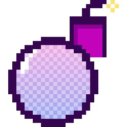
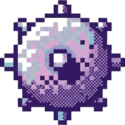
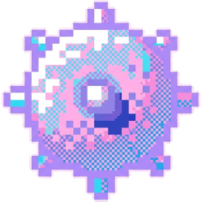

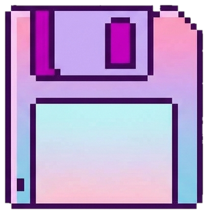
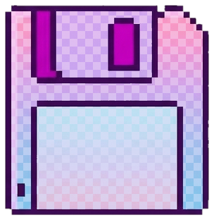
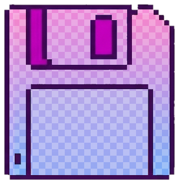

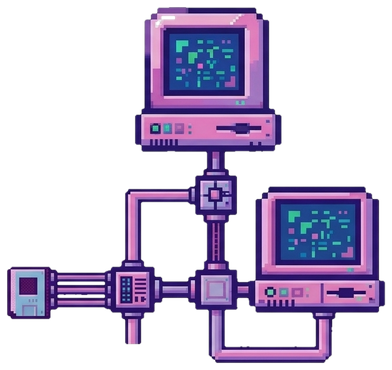
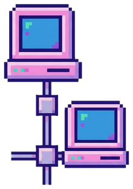
Each window type on the site, rebuilt here as real HTML and scaled down to fit. They sit still here; on the real pages most of them drag, open, close or do something silly.
I design and build web experiences. Have a poke around, every window opens!
Standard window. Double border, gradient title bar, three square buttons. Drags around the Home desktop and links to About.
Go to a complete content model?
Alert cascade. Two ghost windows trail behind the front one. YES opens the content model case study.


I design it, I build it, I wire it to the CMS, and I check it works.
See portfolio →Folder window. The biggest window on the desktop, a peek at the case studies with a jump to the full file browser.


Vintage work: projects from the dial-up era of my career.
Small folder. Tucked behind the big one on Home, it opens Earlier work.
New connection found! Want to get in touch?
Dialog. Opens from the network icon. CONTACT ME swaps the buttons for the mail popup.
Popup. The email is never written in the HTML. Show email builds it on click, with Copy and Back.
Click to dig. Right-click to flag.
Game. One fixed 8x8 map, confetti when you win. The board here is a still.
Psst. Best file in the whole trash.
File list. Click a file for a joke. Right-click the icon for Empty Trash, which deletes everything except one file. Nice try.
Video window. Opens from the secret file in the trash. Press play, it is worth it.
Progress bars. My languages as a classic loading window. The bars fill up when you scroll to them.
MS Paint. It really works: brush, eraser, eyedropper and shapes, and clicking the palette repaints the skill pills.
A single referral portal template, themed for three fictional brands.
Open case study →File-browser card. The reusable project card in the Selected work explorer, filtered by the sidebar and the search box.
Landing pages and customer portals for partner brands, themed case by case.
Promoted from Web DesignerResponsive pages across HTML/CSS, a headless CMS and Material UI.
Chat window. Every role is a bubble. Type a message at the bottom and you get one reply back.
The weather on every page. A few drift behind window edges so they peek out at the border; the rest float in open sky. Shown here at their real proportions, with the same drop shadow.
Square, outlined in indigo, with a hard offset shadow. Labels are set in IBM Plex Mono and written in sentence case. Hover any of these.
.btn--primaryThe main action, pink..btn--softThe quieter second action..modal-ctaThe way out of a desktop window..chipYellow, blue, purple and pink..pill / .tagSkill pills and section tags..navbtn / .navbtn.pressed / .nav-clockWin95 bevels: light top and left edges, dark bottom and right. Pressed flips them and sinks the button. The clock sits in a recessed well, set in Silkscreen.Hover: the shadow disappears, like pressing a real key.
Soft pastels with one dark indigo for every outline, so the sugar never gets mushy.
Four faces, each with one job. The label face took the longest to settle; IBM Plex Mono won.
notice.exe
Window titles, chips, CTAs. 0123456789
Home 10:26
Taskbar Home, tabs and the clock
Let’s build something good.
Round and friendly, at 600 to 800
Poke around, click things.
Every paragraph on the site, set at 500 for a soft, readable grey.

Open to Web Design and UI Design roles in Berlin or remote.
Contact Me